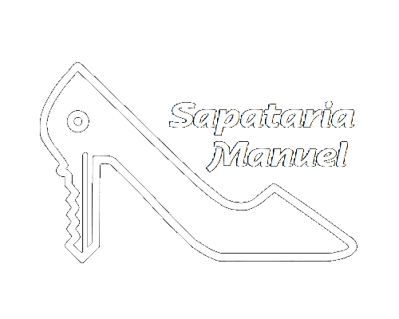
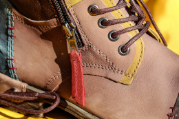
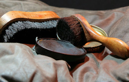

Dispomos de moderno equipamento que nos permite aliar a tecnologia, com tradição e arte de trabalhar peles e couro.


Rua Dos Anjos, 84-C
1150-040 Lisboa
Tel. 213 142 755
Seguna a Sexta:
10:30 - 13:30 e 14:30 - 17:00
Sábados: 10:30 - 13:30